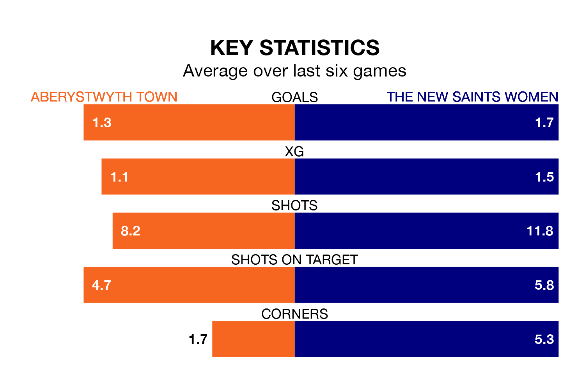

Relegation candidates The New Saints Women face a challenge away against high-flying Aberystwyth Town on Sunday.
The New Saints Women are fifth in the Welsh Premier Women's League table, and have picked up five wins and one draw in their 13 games to date.
Aberystwyth, meanwhile, are fourth in the standings with 16 points, having won four and drawn four, and are 18 points behind table-toppers Cardiff City.
With 29 goals in 13 games so far this season, The New Saints are the league's third-highest scorers with 2.2 goals per game. But they are conceding more than average too, letting in 36 goals at a rate of 2.8 per game.
Aberystwyth, meanwhile, are below average scorers, with 1.4 goals per game, compared to a league average of 1.8. They have conceded 1.5 goals per game.
Town are in mixed form in Welsh Premier Women's League, with two wins and two draws from their last six games.
With two wins and four losses over that period, the New Saints' form is slightly worse – they have taken six points from 18, compared to the hosts' eight.
In the last five years, Aberystwyth and The New Saints have played each other on five occasions. Aberystwyth won one of them, The New Saints three, and they drew once.
On average, Aberystwyth scored 1.4 goals and the New Saints 2.4 in those matches.
Their last meeting was on November 5, when The New Saints won 4-3 at home.
Aberystwyth's last match was on February 4, a 1-1 draw against Swansea City, with getting the goal for Aberystwyth.
The New Saints lost 5-0 against Swansea City last time out, on January 28.
Updated: 14:59 (UTC), 05/02/24